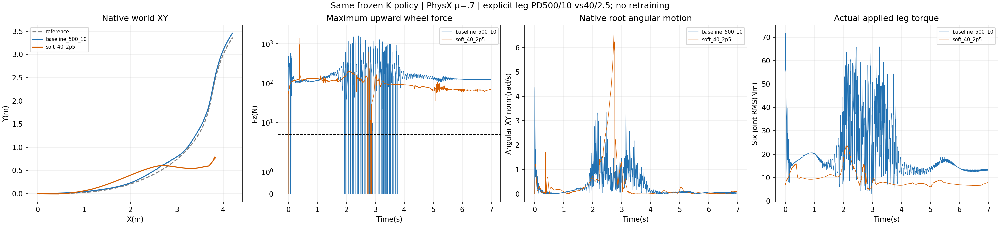

The lower-gain execution has a higher wheel-force support fraction and lower core high-frequency angular motion, but the robot overturns and loses the path. It does not solve stable high-speed turning. K at500/10 remains the reference; no friction sweep or gain-specific PPO training was launched.
Two actual PhysX episodes at effectiveμ=0.7, same K normalized actor, same initial recorded mechanical state,400Hz physics/50Hz policy, original cylinders, masses, native contacts, motor torque/speed limits, reference and rewards. The same policy operates in closed loop, so its actions respond to different states. No physical simulation or policy inference is run by the native-pose renderer.
| Execution | Core XY RMSE(cm) | Core speed retained(%) | Core β RMSE(°) | Any-wheel support(%) | Longest gap(ms) | HF/original PPO | Core maximum tilt(°) | Failed original checks |
|---|---|---|---|---|---|---|---|---|
| baseline_500_10 | 8.16 | 98.10 | 3.77 | 89.52 | 45.0 | 0.614 | 9.73 | any_wheel_every_physical_sample, longest_no_support_gap |
| soft_40_2p5 | 55.44 | 83.72 | 20.65 | 99.17 | 40.0 | 0.432 | 97.42 | core_xy_rmse, core_xy_peak, whole_xy_rmse, whole_xy_peak, core_speed_retention, core_reference_beta, any_wheel_every_physical_sample, longest_no_support_gap |
Core=1.44–4s; support=0.02–6.96s. Wheel support remains at least one ground-filtered normal force>5N at every actual2.5ms sample, with required fraction100% and maximum gap0. The other wheel may lift. β follows the intended nonzero reference. HF uses root angular-XY10–100Hz RMS relative to original same-engine PPO. Body height and geometric flight are not automatic failure gates.
The40/2.5 case has persistent nonwheel-ground force>1N from 2.7375s through the endpoint. Maximum core tilt exceeds90°. In inspected frames it is upright at2.24s and overturned at3.00,4.00 and6.96s. The99.17% wheel-force fraction includes continued wheel loading after the body has fallen. Likewise, lower full-core HF and motor effort cannot establish smoother successful turning. XY, speed, β and original support criteria fail independently of any height/flight shortcut.
| Execution | Core position error RMS(rad) | Core computed effort RMS(Nm) | Core applied effort RMS(Nm) | Core clipped motor samples(%) | Core peak wheel Fz(N) |
|---|---|---|---|---|---|
| baseline_500_10 | 0.0777 | 35.22 | 30.50 | 5.37 | 1855.51 |
| soft_40_2p5 | 0.3081 | 11.50 | 11.50 | 0.00 | 617.84 |

Every actual DC-motor computation is recorded before its physics step: measured state, desired position/velocity, feedforward effort, gains, computed and clipped effort. Both arms contain2792 consecutive action/motor pairs. Independent PD reconstruction has zero maximum difference in the saved float32 records; applied effort matches the native post-step torque field exactly. The baseline observer reproduces the original K physics NPZ byte for byte.
computed effort = Kp*(q_target-q) + Kd*(dq_target-dq) + feedforward applied effort = original DC-motor torque/speed clipping(computed effort) legs:80Nm continuous/stall,15rad/s; wheels:12Nm continuous/stall,100rad/s
Initialization and wrapper-reset motor callbacks retain500/10 and are recorded separately. The selected gains activate on the first actual physical policy action. Each valid episode had one initialization compute callback and2792 recorded physical motor computations. No implicit solver drive is added. Runtime contracts explicitly distinguish training500/10 from execution40/2.5.
The numbers40/2.5 were checked against the official TRON1 wheel-foot configuration (file blob014f37917b2bd5db8ad92afdcb478bb31e5381db). That source uses ImplicitActuatorCfg; this test retains our DC motor and its original limits. It is not a reproduction of the official controller or a test of a policy trained with those gains.
No PPO update, reward revision, contact-geometry change or pose interpolation was made. Both rollouts use PhysX, so this is an actuator-execution transfer diagnostic. Source snapshots and logs from two earlier setup-only failures are preserved separately; they are not task trajectories. The valid snapshot fixes initialization callback handling and CUDA tensor joint-index normalization.
All350 video frames were decoded; four saved stills were inspected. Camera distance/world angles are fixed across cases and time; only translation follows the root. Opaque original poses/heights, body/wheel/velocity headings, common XY bounds and native support dots remain. Full manual video playback and task completion are not claimed. N=1 per arm.
python -B scripts/analyze_physx_leg_pd_probe.py --collection RESULT/evidence --reference RESULT/reference.npz --output-dir /tmp/leg-PD-analysis python -B scripts/render_physx_leg_pd_probe.py --collection RESULT/evidence --reference RESULT/reference.npz --analysis /tmp/leg-PD-analysis/analysis.json --output-dir /tmp/leg-PD-render
The repository checkout and original visual assets are needed for FK/graphics; existing Isaac/PhysX environments and original K actor are needed only to repeat dynamics. Neural weights, physical model files, native binaries and credentials are omitted from this evidence collection. All owned remote probe jobs have ended.
Full native metrics and failed checks · Raw evidence SHA-256 ledger · Video/camera verification · Previous inference-only target-ramp probe · Previous Q reward failure